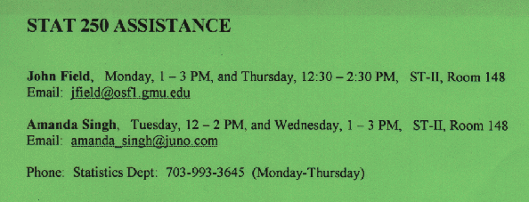

Stat 250, Section 003
Welcome to the Stat 250 Webpage. This page is updated whenever
new information on dates, times, etc. becomes available.
This page also provides links to
lecture notes,
homeworks,
homework solutions, and
exams solutions.
- 1) Stat 250 Curriculum Spring 1999.
(1/27/99)
- 2) Homework 1. (1/27/99)
- 3) Homework 2. (2/3/99)
- 4) I checked back with the bookstore - actually
they just received 20 additional copies of Moore's book.
Just walk over there and get your copy. (2/4/99)
- 5) Lecture Notes are
available in this folder. They are stored as individual
gif files. They are typically placed here within a day or
two after each lecture. If you missed a lecture, check here first.
You can print these gif images directly through most Web browsers,
load them into a photo processing program and
print them from there, or even incorporate multiple of them
into Word or a similar text processing program. (2/4/99)
- 6) Homework 3. (2/9/99)
- 7) Quizzes and Final from last summer are available
as pdf files:
Quiz1,
Quiz2,
Quiz3, and
Final.
(2/9/99)
- 8) Homework Solutions are
available in this folder. They are stored as individual
gif files. They are typically placed here within a day or
two after each lecture. If you missed a lecture and the homework
solutions that have been handed out, check here first.
(2/11/99)
- 9) Just in case you missed the 2/10/99 lecture, here some reminders.
As promised, I put the shortcut formulas
how to calculate the
variance and standard deviation on the Web. These might be helpful for
the quiz in case you don't have an appropriate calculator.
As you hopefully recall, the first quiz will be on
Wed 2/17/99 in class
from 6:10pm to 7:10pm. During the quiz you are allowed to use a
regular size two-sided note sheet and a calculator. Whatever
formula, solution to a homework assignment, or segment from the
textbook you want to put on your note sheet or program into your calculator -
go ahead. Everything is permitted. Also no restriction what
type of calculator you use. However, the use of the entire
textbook and your complete set of lecture notes is
NOT permitted
during this and all future quizzes. Everything we have done in class
until the end of yesterdays' lecture can be port of the quiz.
It clearly does not suffice if you only study the textbook.
The extra material on graphics will be a major component of this
quiz. As promised, one question of the quiz will be taken from
our previous homework assignments - so look at these assignments
and solutions before the quiz.
Several micromaps are available now. If you
missed the link to the Graphics Production Library, here it is:
http://www.monumental.com/dan_rope/gpl/
Finally, the Statistical Computing and Statistical Graphics Newsletter
which contains additional articles with respect to micromaps and
the Graphics Production Library is available here (just check the
on-line index to find the corresponding issues):
http://cm.bell-labs.com/cm/ms/who/cocteau/newsletter/index.html
If you are interested to collect your Homework 2 assignments,
you can do so on Tuesday 2/16 after 12noon (unfortunately I don't have them
back by Monday - sorry). They will be piled in front of
my office (142 Science & Tech II). If you want to, you can also turn
in your Homework 3 assignments on Monday during my office hours
or during our help session on Tuesday and you can get the solutions
at that time. I still have to arrange for a room for the help
session so please check back this page early next week.
(2/11/99)
- 10) The extra help session takes place on
Tuesday 2/16/99 from
7.30pm to 9.00pm ENT 278.
Please note - this is not our regular classroom!
(2/15/99)
- 11) If you missed the Quiz 1 for whatever reason
but still are attending this class, send me an e-mail
(symanzik@galaxy.gmu.edu) or see me in my office hour
on Friday between 2 to 4pm. You also have to see me to
get a copy of Homework 4 - it will not be posted
on the Web at this point of time.
(2/17/99)
- 12) In case you cannot make it to my office hours or
want to obtain additional help, please contact our
two Stat 250 tutors, Amanda and John. Amanda has been
assigned to our Section 003 and she also does the homework
grading - so please try to contact her first if you want
to speak to a student tutor. John is not directly related
to this class and may not know about the non-textbook
material we discuss in class, in particular the Webpages
we look at - so only contact him if you have a general
textbook related question. And here is how you can reach them:

(2/19/99)
- 13) Homework 4 and
Homework 5. (2/25/99)
- 14) Sorry but I have to reschedule my office hours this week.
I am out of the office this Friday 2/26 and may or may not be
available on Monday 3/1. If I am unavailable on Monday,
I will be available on Tuesday. Please check this Web page
for an update or contact me by e-mail or phone (993-3786)
if you want to speak to me during my office hours this week. (2/25/99)
- 15) Homework 6. (3/3/99)
- 16) As you hopefully recall, the second quiz will be on
Wed 3/10/99 in class
from 6:10pm to 7:10pm. As usual, you can bring your
calculator and a two-sided note sheet.
The extra help session takes place on
Monday 3/8/99 from
6pm to 8pm in the Fine Arts Building B212.
Please note that I will be only available from 2pm to 3pm during
my Monday office hour. However, if you can't make neither my
office hour nor the help session, you can reach me in my
office on Tuesday afternoon after 2pm.
(3/5/99)
- 17) Homework 7. (3/11/99)
- 18) As promised here the
Basketball article entitled
"College Basketball Upsets: Will a 16-Seed
Ever Beat a 1-Seed?" by Hal S. Stern and
Barbara Mock, published in Chance, Vol. 11, No. 1, Winter 1998.
This is absolutely voluntary to look at. I keep the article
online during the NCAA tournament but remove it again therafter.
The interesting
facts in short: a 16-Seed obviously has a chance to beat
a 1-Seed, but this chance is only about 1%. With 4 pairings
of 16-Seed vs 1-Seed per tournament, you can expect that
such an upset happens in average every 25 years.
The chances that a 14-Seed (GMU) beats a 3-Seed (Cincinnati)
are about 20% - good luck, Patriots! (3/11/99)
- 19) For students that missed Quiz 2 - several of you contacted
me already before this quiz with legitimate reasons that allow
for a make-up-quiz after Spring Break.
I will be out of town between Sa 3/13 and Mo 3/22 (therefore
no office hours next week and on Mo 3/22) but would like
to schedule the make-up-quiz before our next lecture.
If you missed this quiz and already talked to me (or haven't been
able to contact me yet but have some official documents that prove
why you couldn't participate in this quiz), please send me an e-mail
and indicate which of the days and times listed below work for you for the
make-up-quiz:
- (1) Tuesday 3/23, 8pm to 9pm,
- (2) Wednesday 3/24, 10am to 11am,
- (3) Wednesday 3/24, 3pm to 4pm.
There will be no possibility for a make-up-quiz after our next
lecture. I do not post the solutions to our last homework assignment 6
on the Web since in some of your cases it also makes sense to allow a late
homework submission (and everybody who took the quiz should have gotten
the solutions in class).
Please check the Web page and your e-mails on 3/23 and be prepared
to take the quiz on one of the days/times indicated above.
I will provide this information on 3/23 before 4pm so you should
have adequate time to get ready for the make-up-quiz
even if it is on Tuesday night. (3/11/99)
- 20) It appears that we have to take the make-up-quiz at three different
times: Tue 3/23 at 8pm, Wed 3/24 at 10am, and Wed 3/24 at 3pm.
Please come to my office (room 142 S&T II) shortly before the quiz. (3/23/99)
- 21) Homework 8. (3/24/99)
- 22) Homework 9. (3/31/99)
- 23) Homework 10. (4/7/99)
- 24) As you hopefully recall, the third quiz will be on
Wed 4/14/99 in class
from 6:10pm to 7:10pm. As usual, you can bring your
calculator and a two-sided note sheet.
We have two help sessions this time. The first help session
takes place on
Sunday 4/11/99 from
5pm to 7pm in S&T II, Room 150.
The second help session takes place on
Monday 4/12/99 from
6pm to 8pm in (to be specified on Monday).
Please note that I will be only available from 2pm to 3pm during
my Monday office hour.
(4/9/99)
The help session today will be in the
Fine Arts Building B212
from 6pm to 8pm.
This is the same room as for our help session before Quiz 2.
(4/12/99)
- 25) Extra Credit questions. (4/11/99)
- 26) Homework 11. (4/14/99)
- 27) Homework 12. (4/21/99)
- 28) Homework 13. You should be able
to work on most of the questions related to the Binomal
distribution at this point of time. But please turn in your
answers only with the remainder of this homework assignment
on 5/5/99. You may also want to work on some of the
extra credit questions at this stage since part I of
assignment 12 should be relatively short... (4/26/99)
- 29) Schedule: I will be out of town
Thursday 4/29 through Sunday 5/2 and Wednesday 5/5 (right
after class) through Saturday 5/15.
Final: The final is on Wednesday 5/12 from
4:30pm to 6:30pm in ENT 178. Dr. Wegman will monitor the exam.
I will do the grading once I am back.
You may bring a 2-sided note sheet, a calculator, a ruler, etc.
but you may NOT bring your textbook, your lecture notes, etc.
You must bring your ID (student ID,
drivers license) to verify that you are the person that
signed the final (and not your best friend, brother/sister,
spouse, etc.).
Contents of the Final: It is comprehensive.
You may want to work on the following material in this order:
(i) look at our old quizzes/solutions first (1 question guaranteed)
(ii) look at last years old quizzes and final
(iii) look at our homework assignments and solutions
(iv) look at our lecture notes
(v) look at additional textbooks (and exercises)
or some of the books I have cited in class
Due Dates: On Wednesday 5/5 several things are due:
Homework Assignment 12, part II, Homework Assignment 13, and the
Extra Credit questions.
Graded assignments 12 and 13 can be collected from a box outside
my office on Tuesday 5/11 in the afternoon. Extra handouts and
graded homework assignments and exams are also available in this
box as of today. You should check this box if you miss some of your
materials.
Office Hours: No office hours Friday 4/30.
Extended Office hours Monday 5/3 from 2pm to 6pm.
I am planning on an extended help session on Tuesday 5/4
from 7pm to 10pm. I will post the room number as soon as
I know it myself.
I plan to spend the last hour of our Wednesday 5/5 lecture
for in-class questions if you can't make it to the help
session or the Monday office hours.
Unfortunately, I don't have e-mail access
after our 5/5 lecture. However, you can still contact
Amanda.
Grades: I did some calculations with minimum
point requirements
to achieve a certain letter grade. Eventually, the final lower cutoff limits
may go slightly down based on the outcome of the final
but I won't raise them. Extra credit points
will be added to your scores only after the original grades have
been fixed. If you feel comfortable with your grade, there is no
need to work on any of the extra credit questions at all.
I also created an
overview of points
awarded so far. This list is not ordered at all.
You have to know about the outcome of one or two of your exams
to identify your full score. Please let me know if something
is incorrect. This list does not include the grades of
homework assignment 11 or the last two make-up-quizzes.
(4/29/99)
- 30) Our help session has been scheduled for
Tuesday 5/4/99 from 7:20pm to 10pm
(sorry, but there was no room available before 7:20pm).
It will take place in the East Building, Room 122.
(5/3/99)
- 31) Done! I finished grading late last night and turned in the
grade sheets earlier in the morning. Here are the results:
The final
turned out much worse than what I expected. The summary statistics are
40 for the minimum, 97.5 for the first quartile (in fact, 16 people
had less than 100 points - which is 1/3 of the total possible number of points),
134 for the median, 140.6 for the mean, 185.5 for the third quartile,
and 258 for the maximum.
Accordingly, I lowered my grade expectations for the final to
192 for an A (instead of 260), 162 for a B (instead of 220),
132 for a C (instead of 180), and 102 for a D (instead of 140).
Overall cutoffs were then 437 (D), 547 (C), 657 (B-), and 767 (A-).
I further split these 110 point ranges into 35 points for a "-",
40 points for the full letter grade, and 35 points for a "+".
Impressed by the efforts of 4 people in the non-existing "D+"
category, I decided to call everything above 520 points still a "C".
This resulted in the following final cutoffs: 437 (D), 520 (C),
622 (C+), 657 (B-), 692 (B), 732 (B+), 767 (A-), and 802 (A).
If you are asking why you got an "F", I am asking why you
didn't do the work. Look at the points you lost by not turning
in your homework assignments and by not working at all (with one
exception) on the extra credit questions. Also the "D"s are still
very weak in these two fields. It should have been very easy to get
a "C" by just doing the work! Fortunately, the extra credit questions
allowed many of you that turned in this assignment
to obtain a better grade.
Once again, I prepared a point overview
that is ordered from highest to lowest but does not contain any name
or other identifier. You have to know about the outcome of some
of your previous quizzes and homework assignments to identify
yourself. Please check the scores and contact me in case
of any question or problem with the reported grade.
I plan to scan in the solutions of the final later this week.
Please check this page again on Friday or on Monday if you
are still interested in answers to particular questions.
You can also reach me during my official office hours this
Friday and Monday from 2pm to 4pm and look at the solutions then.
(5/19/99)
- 32) There are still plenty of graded homework assignments
and old quizzes in the box outside my office (room 142 S&T II).
I'll keep them for a few more weeks but will discard the ones
that have not been collected later in the summer.
Please collect them as soon as possible. (5/19/99)
- 33) As promised, here are the
solutions for the final.
(5/20/99)
Good luck to all of you. It was fun teaching this class!
Jürgen
P.S.: And if you still have some humour about statistics,
check this Web page someone pointed to me last semester:
http://www.ilstu.edu/~gcramsey/Gallery.html
Last Update May 20, 1999.
{kind=link}
{kind=link}
{kind=link}